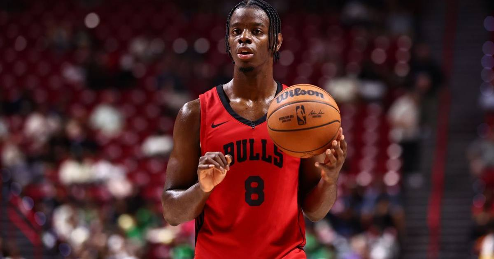

Bulls Spoil Bucks' Home Opener, 132-125
Tyler Herro dropped 34 in his first official game as a Buck, but Chicago's 62-44 paint advantage and a 26-for-28 night at the line carried the Bulls to a 132-125 comeback win in Milwaukee.

Disclosure: this post contains affiliate links. I earn a commission on qualifying purchases.
The matinee special delivered. The Chicago Bulls erased an early deficit and beat the Milwaukee Bucks 132-125 on Friday at Fiserv Forum, spoiling the Bucks' home opener and evening their own record at 1-1 while Milwaukee fell to 0-2.
Herro's 34 wasn't enough
Tyler Herro's first official game as a Buck was a statement: 34 points on 12-for-24 shooting with five threes, plus five rebounds and four assists. The problem was everything around him. Jaime Jaquez Jr. added 19 points and a team-high 11 rebounds, but the Bucks gave up 62 points in the paint — a 62-44 margin for Chicago — and lost the game at the free-throw line, where the Bulls went 26-for-28 while Milwaukee managed just 14-for-26 (Milwaukee Journal Sentinel).
In a seven-point game, that's the whole story.
Chicago's response
Coming off a brutal opening-night loss, the Bulls got it from everywhere. Norman Powell led with 25 points, Caleb Wilson contributed 21 points and six rebounds in his second NBA game — including key late free throws — and Leonard Miller went 7-for-11 for 19 points. Jalen Smith added a double-double with 14 points and 13 rebounds off the bench.
The Bulls dominated inside from the second quarter on. Milwaukee led 32-17 after one, but Chicago answered with a second-quarter surge — 44 points in the frame — and never fully let go. Isaac Okoro's layup cut it to 122-121 with 3:03 left, but that was the last meaningful made shot of the game for Milwaukee.
The World Series effect
This one tipped early on purpose: the game was moved up for World Series Game 1 across town, and much of the Bucks' roster headed straight from the arena to American Family Field afterward. A Milwaukee sports doubleheader, split one and one — the Brewers won 3-2 while the Bucks fell.
Watch
Source: "BULLS at BUCKS | FULL GAME HIGHLIGHTS | October 23, 2026" on the official NBA YouTube channel — full game highlights including Herro's 34, Powell's 25, and Chicago's second-quarter surge.
Gear up: Fanatics